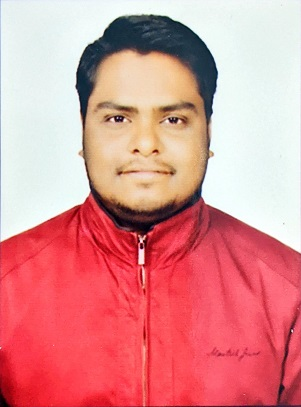

|  |
Surendra YadavML enthusiast not interested in coding Tea lover Looking for mental peace, which is pieced linkedin Profile |
| Duration | Organization | Position |
|---|---|---|
| July 2019 - Dec 2019 | Capgemini | Senior Software Engineer |
| Feb 2021 - Apr 2022 | Sandvine | Test Engineer 2 |
Categroizes encrypted traffic into Streaming, VoIP or Content
Categroizes iCloud traffic tunneled via iCloud private relay into either Streaming or VoIP or Content
Uses Google's Deep Lab Model to produce a beatuiful DSLR like background blur into portrait photos captured using single camera mobile phone.
|
|